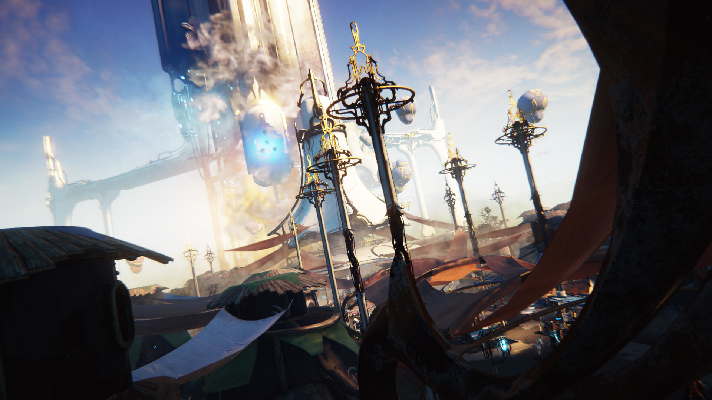

Cetus

Cetus is a settlement built by the Ostron people around an ancient Orokin tower, which they harvest for various usable parts. Kept safe from Grineer aggression by the Unum residing within the Tower, this town serves as the central hub for the Plains of Eidolon, where players can interact with various NPC's to purchase items from shops, or accept quests to be accomplished out in the plains. Upon arriving on Cetus, players are deposited on a landing pad by a lake on the outskirts of town, and they can reach the town by walking along the lakeshore to one of the three inner town entrances. From there, players can exit Cetus onto the greater plains via a large Orokin door on the town's outer wall, leading to a large room which has another door that leads to the plains beyond. The room acts as a loading screen, and players will be unable to exit out the other end until the loading is complete.
Spear Fishing The Plains of Eidolon feature large bodies of water, which house a wide variety of aquatic life. Players can engage in spearfishing to catch various fish and crustaceans, which can then be used as resources to craft various Ostron items or gifted to Fisher Hai-Luk to increase standing with the Ostron faction.
Mining Another means of getting resources in the plains is through mining; players can find mineral veins, visible as bright glowing marks, scattered throughout the landscape, which can then be mined with a dedicated cutting tool. Ores and Gems are used in a variety of crafting recipes, and uncut gems can also be traded in to Old Man Suumbaat to increase standing with the Ostron faction.
Hunting The Plains also features several indigenous species of wildlife that roam around the field, such as large birds-of-prey. These species can be hunted and killed to drop resources unique to said animals.
Grineer The Grineer, comprised of the special Tusk Corps, are the primary enemy faction in Plains of Eidolon during the daytime and can be found in either small patrol groups roaming the plains, or stationed at one of several outposts and firebases they have set up in the area. The Grineer firebases are heavily fortified with various defenses, including Ramparts and automated heavy defense turrets. For added firepower, these firebases are also capable of using mortars that lob high explosive shells at long range towards their targets. These Grineer units are unique as Eximus variants can posses the Venomous and Shock versions, normally only used with the Infested and Corpus respectively. They also use special Cold, and Fire grenades not found on other Grineer units in the system. The Grineer units can spawn at the Plains in different ways, either via Tusk Firbolg dropships or descending from orbital drop pods. They can also be deployed from Tusk Bolkor troop ships, which are armed with rotary cannons for close air support. All the dropships on the Plains are vulnerable to attacks and can be destroyed before they deploy the units they transport. If a sufficiently large patrol is engaged in combat, the Grineer units will deploy Tusk Seeker Drones that will signal for reinforcements, which then will proceed to spawn via the aforementioned options. The drones will continue to call in additional enemies unless they are destroyed. Finally, the Grineer can also field airborne units such as Dargyns and Ogmas to patrol the plains and attack players from the air. Once these air units are defeated, the Dargyn Pilot may drop to the ground. During nighttime, the Grineer will retreat to the safety of their outposts, reducing the number of Grineer that can be encountered on the field during that period, though in turn raising the difficulty of a nocturnal assault on a base. Grineer are hostile towards the Sentient and will attack if they encounter them, even against the massive Teralysts.